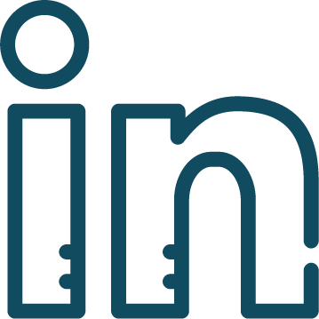

Fiona Whittington is the Executive Director and Founder of TechTogether, a nonprofit that works to elevate the access, exposure, and inclusion of gender-marginalized students in interdisciplinary fields of technology. When I am not at work, you can find me outside either hiking, running, or studying the neighborhood plants.

Anum Ahmad is a rising junior from Princeton, NJ who loves combining her passion for coding with activism. She also enjoys volunteering and organizing hackathons, especially for gender marginalized communities. When she isn't coding or working, she's usually drinking bubble tea or reading!
Kelly Ly is an undergraduate studying computer science at the University of Massachusetts Lowell. In her free time, she enjoys organizing hackathons with TechTogether, traveling to new places, and trying various cultural dishes.
Lavanya Sharma is a rising senior at North Hollywood High School, and is also one of the Executive Directors of AIHacks, Southern California's First All-Female High School Hackathon. In her free time, she enjoys skincare, competing at hackathons and getting boba with her friends. .